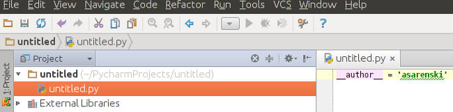
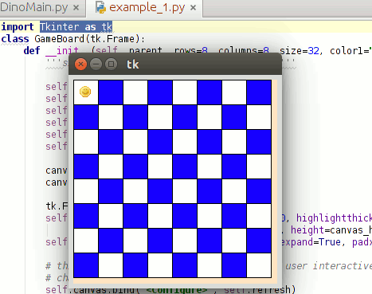

The easiest way to follow a tutorial is to have a copy of the completed project. Git makes this really easy. Open a terminal. Navigate to where you would like to create a copy of the folder. Type:
This creates a cloned directory of the finished project.
Open the project, which was created during this part of the requirements tutorial. Right-click your project folder and select new > Python File. The project tree should look like this now.
Let's get started. At the head of the file type:
This command imports the functions from the Tkinter module. Let's also create a main function.
def main():
root = Tk()
root.mainloop()
main()
If you run this, Tkinter creates a Tk instance and runs it in the main event loop. This means that if we want to write a while function, then it will interfere with Tkinter's main loop. We'll get into how to write a while function in a different manner. Now that we understand how a basic Tkinter instance is written, let's borrow some code. Go Here. This is how the basic board is created. A short explanation is the instance of Tkinter creates a Frame, which is like a window on your computer. Then it takes the canvas, which is packed into the frame, and draws whatever you tell it to draw.
If you copy that code, paste into an empty .py, and run, then this is what you will see:
A cute little smiley! If you notice, you can resize the board. This is how the refresh function comes into play. The refresh function takes event as one of its arguments. In this case the "<Configure>" of our size is our event. Because the board is a big square, the code calculates the minimum size difference needed. The squares are deleted from the canvas. The squares are then redrawn with size difference in-hand. The important part to take-away from this is how to remove objects from the canvas and then put them back in the same spot. This allows you to perform animations.
Borrow the code provided from stackoverflow, submitted by Bryan Oakley. We will work from that code. But because resizing is a pain with regards to resizing imported images, it is turned off in my code. In the main function:
Note that the difference between DinoMain.py and the stackoverflow code is that DinoMain.py imports the functions of Tkinter. The stackoverflow code imports the Tkinter module itself as tk. This means that you have to reference the module when a Tkinter function is called if you go that route.